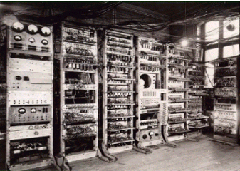
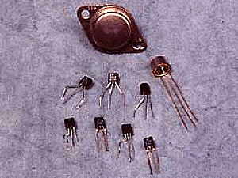
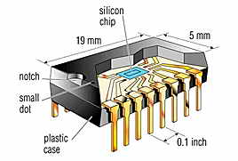
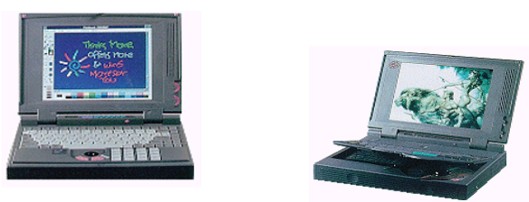
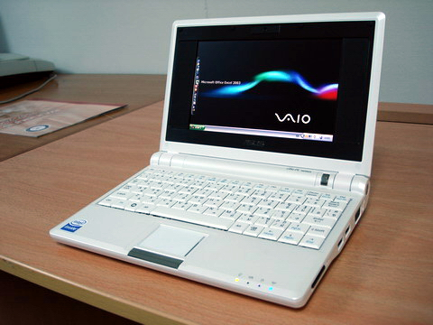

วิฒนาการของคอมพิวเตอร์
นับตั้งแต่มีการประดิษฐ์คอมพิวเตอร์เครื่องแรกมาจนกระทั่งปัจจุบัน เราสามารถแบ่งยุคของการพัฒนาคอมพิวเตอร์ออกเป็นยุคต่างๆ ได้ 5 ยุค โดยพิจารณาจากเทคโนโลยีที่ใช้ในการสร้างเครื่องคอมพิวเตอร์

เป็นคอมพิวเตอร์ที่ใช้งานในช่วง ค.ศ 1951 – 1958 เป็นคอมพิวเตอร์ที่ใช้หลอดสูญญาณกาศ(Vacuun Tube) ขนาดใหญ่ ต้องใช้พลังงานไฟมากในการทำงานการใช้งานยาก ราคาแพง

คอมพิวเตอร์ยุคที่ 2
เป็นคอมพิวเตอร์ที่ใช้งานในช่วง ค.ศ 1959 – 1964 เป็นคอมพิวเตอร์ที่ใช้ทรานซิสเตอรที่พัฒนาโดยเทคโนโลยีสารกึ่งตัวนำ นำมาใช้แทนหลอดสุญญากาศทำให้คอมพิวเตอร์

คอมพิวเตอร์ยุคที่ 3
เป็นคอมพิวเตอร์ที่ใช้ในช่วง ค.ศ 1965 – 1971 เป็นคอมพิวเตอร์ที่สร้างจากอุปกรณ์ ที่เรียกว่าวงจรรวม (Integrated Circuit) วงจรรวมเป็นวงจรที่นำเอาทรานซิสเตอร์หลายๆตัวมาประดิษฐ์รวามบนชิ้นส่วนเดียวกัน ทำให้ขนาดของคอมพิวเตอร์เล็กลง และราคาก็ถูกลงกว่าเดิม

คอมพิวเตอร์ยุึคที่ 4
เป็นคอมพิวเตอร์ที่ใช้งานในช่วง ค.ศ 1972 – 1980 เป็นคอมพิวเตอร์ที่ใช้วงจรรวมขนาดใหญ่ขึ้นที่รวมการทำงานของทรานซิสเตอร์จำนวนมากขึ้นไว้บนชิ้นส่วนเดียว ทำให้คอมพิวเตอร์มีขนาดเล็กลงเป็นคอมพิวเตอร์ตั้งโต๊ะที่เราเห็นกันทั่้วไป

คอมพิวเตอร์ยุคที่ 5
เป็นคอมพิวเตอร์ที่ใช้งานตั้งแต่้ ค.ศ 1981 จนถึงปัจจุบัน คอมพิวเตอร์ในยุคนี้ได้พัฒนาจนมีความแตกต่างไปจากคอมพิวเตอร์ในยุคก่อนหน้านี้มาก ทั้งขนาดคุณภาพ ประสิทธิภาพความสะดวกและความหลากหลายในการใช้งาน เช่นคอมพิวเตอร์ที่สามารถใช้ดูหนัง ฟังเพลง เล่นเกม เป็นต้น และความสามารถอีกหลายอย่างที่อยู่ระหว่างการพัฒนา เช่น การรับรู้คำสั่งด้วยเสีัยงพูดหรือประโยคที่เป็นภาษามนุษย์ คอมพิวเตอร์ที่สามารถเรียนรู้คิดตัดสินใจเช่นเดียวกันมนุษย์
โครงสร้างระบบคอมพิวเตอร์
องค์ประกอบของคอมพิวเตอร์
วงจรการทำงานของคอมพิวเตอร์
ความหมายและความเป็นมา
คอมพิวเตอร์
สรุป โครงสร้างระบบคอมพิวเตอร์
ภาษาคอมพิวเตอร์
ข้อมูล ผู้จัดทำ